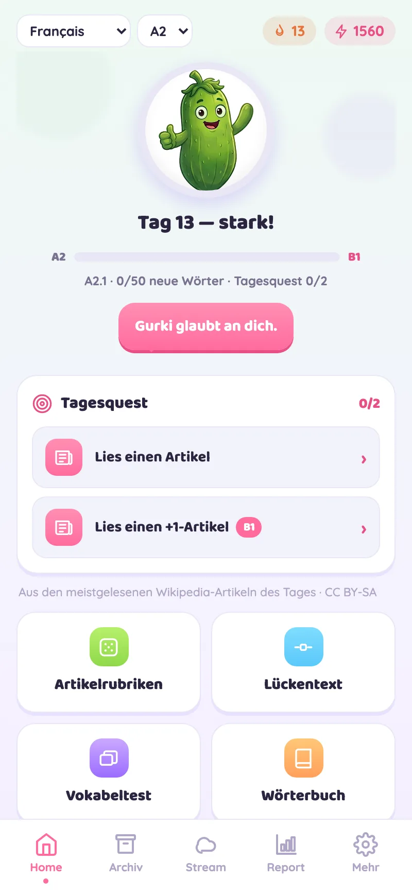
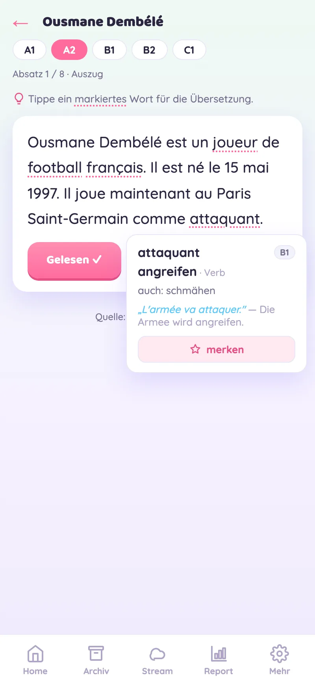
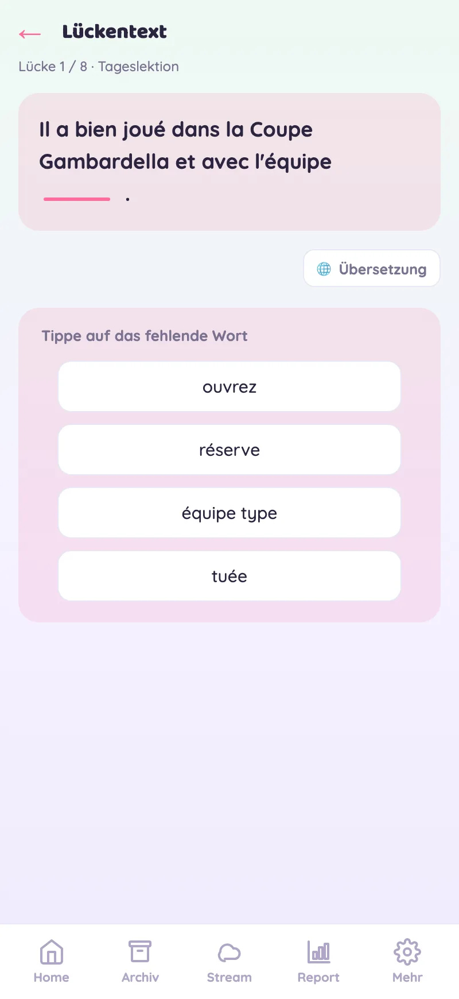
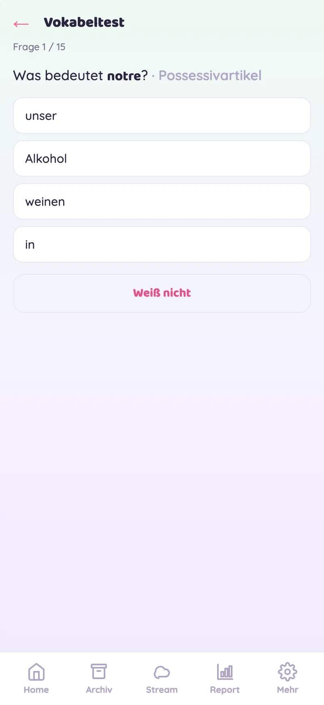
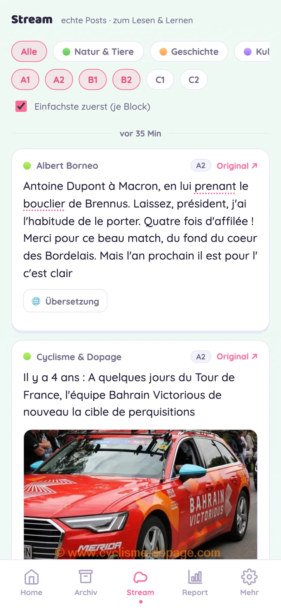

Sechs Modi, ein Ziel: dich durch echte Texte in eine neue Sprache lesen lassen. Hier siehst du sie in Aktion.
Beim Öffnen siehst du deine kleine Tagesquest, deinen Streak und wie nah du der nächsten Etappe bist — ein freundlicher Anstoß, jeden Tag kurz dranzubleiben.

Jeden Tag die meistgelesenen Wikipedia-Artikel — neu geschrieben für dein Sprachniveau (A1–C1). Tippe ein markiertes Wort an und du bekommst Übersetzung, Wortart und einen Beispielsatz. Ein Tipp, und das Wort liegt in deinem Deck.

Setze fehlende Wörter aus dem Tagesstoff ein. Vier Optionen, sofortiges Feedback und auf Wunsch die Übersetzung — so verankert sich neuer Wortschatz im echten Kontext statt auf Karteikarten.

Gemerkte Wörter kommen als Quiz zurück — im richtigen Moment wiederholt (Spaced Repetition), damit sie wirklich sitzen bleiben. Mit Beispielsätzen aus echten Sätzen.

Echte Social-Media-Posts in deiner Lernsprache — gefiltert nach Thema und Sprachniveau, einfachste zuerst. Tippen zum Übersetzen. So klingt die Sprache, wie sie heute wirklich gesprochen wird.
Alle 15 Minuten holt Learny rund 200 frische Beiträge je Sprache von öffentlichen Mastodon-Servern — über viele Hashtags — und sortiert sie automatisch nach Sprachniveau.

5 Level, je 10 Etappen. Lesen, Lernen, Testen — am Ende jeder Etappe wartet der Aufstiegstest. Dein Fortschritt ist immer als klarer Pfad sichtbar, kein Punktechaos.
Kein Account, kein Tracking — alles bleibt auf deinem Gerät.
Learny ist eine installierbare Web-App (PWA) — kein App-Store nötig. Einfach eine Webseite, die direkt auf deinem Gerät läuft.
So holst du Learny auf den Homescreen: